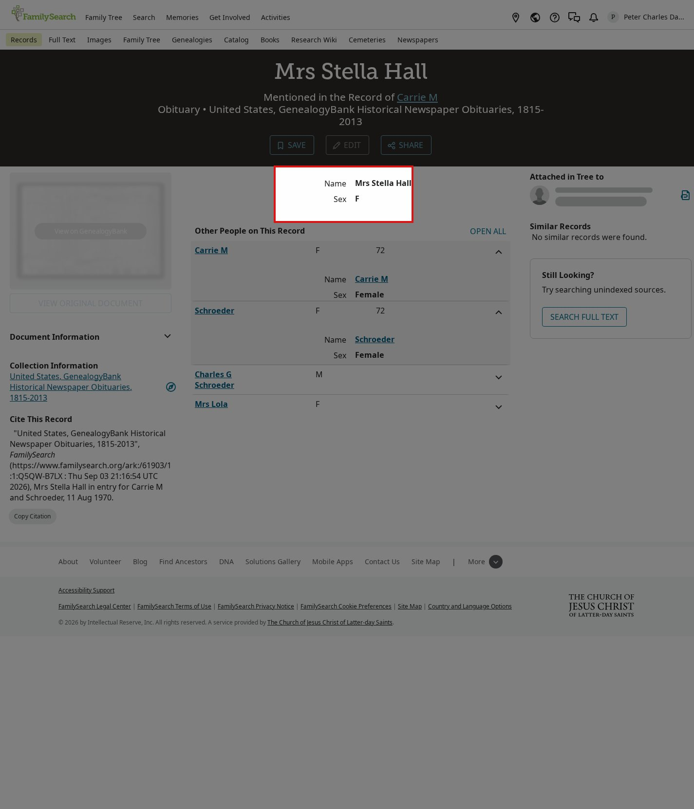
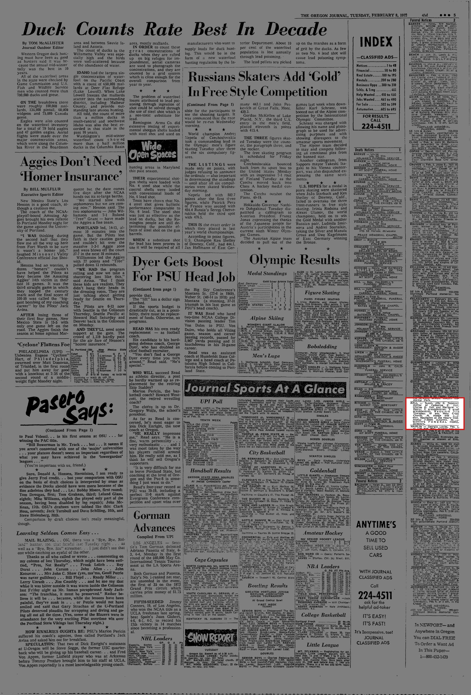
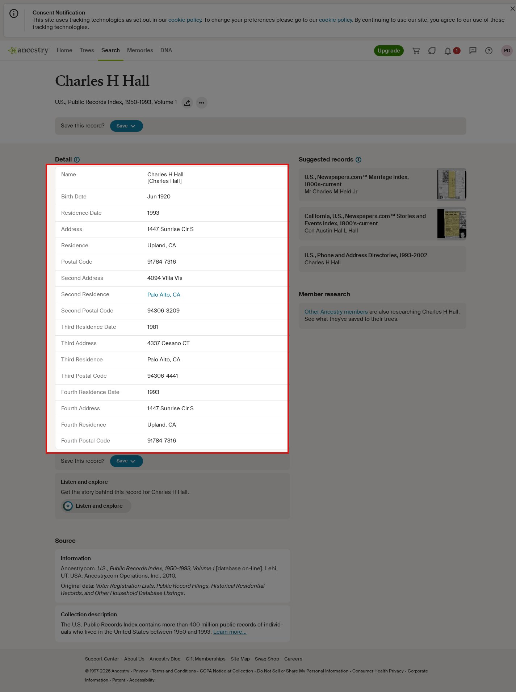
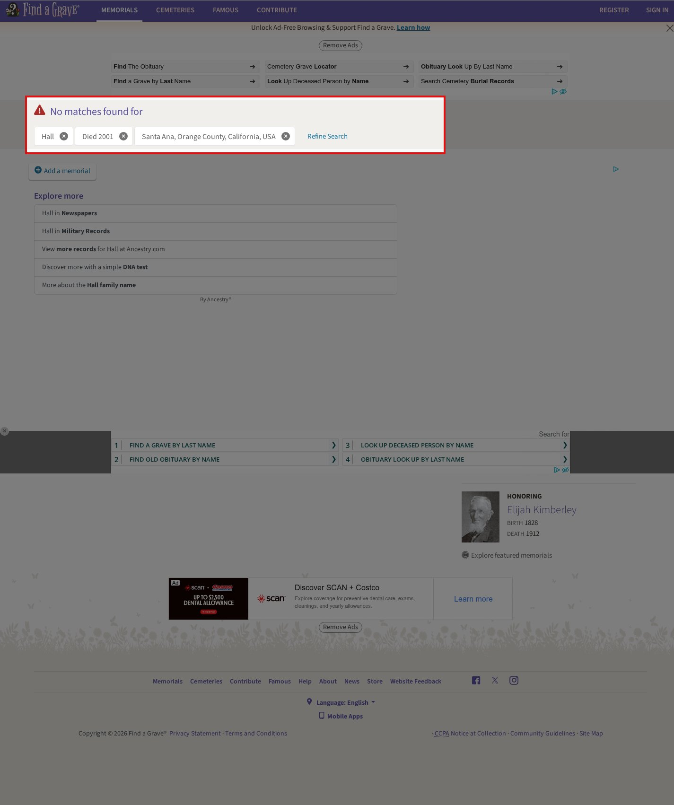
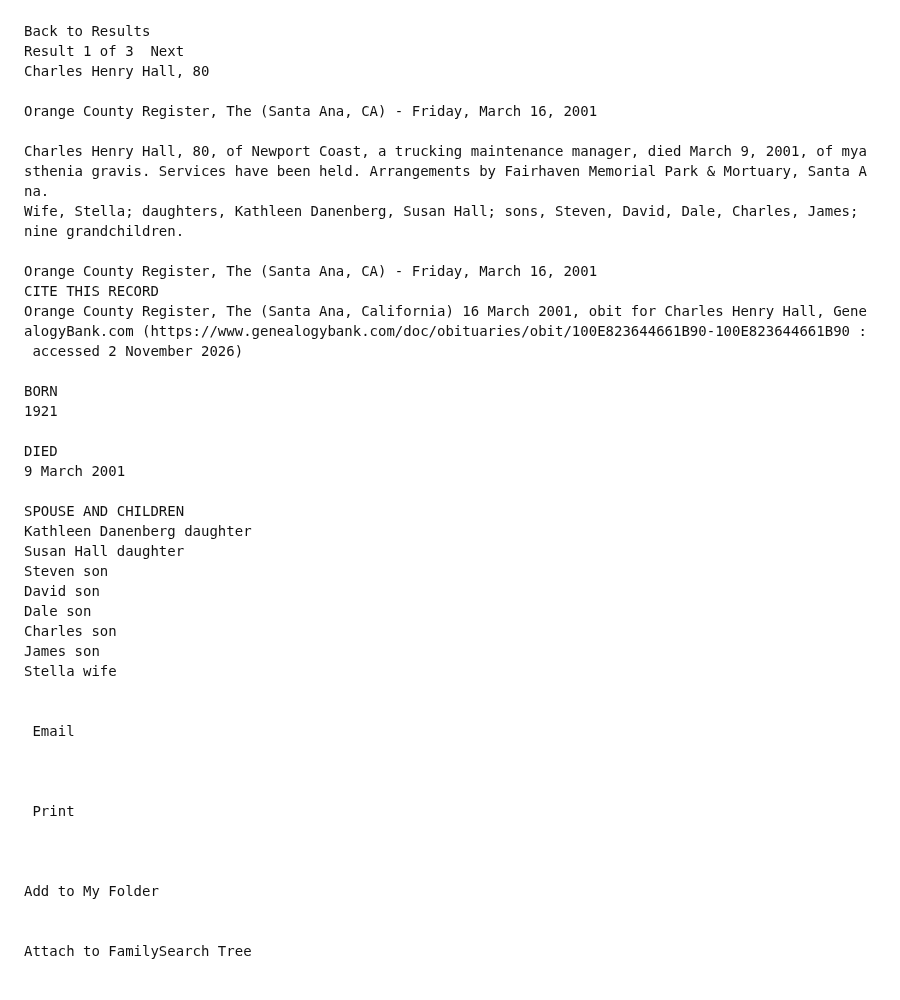
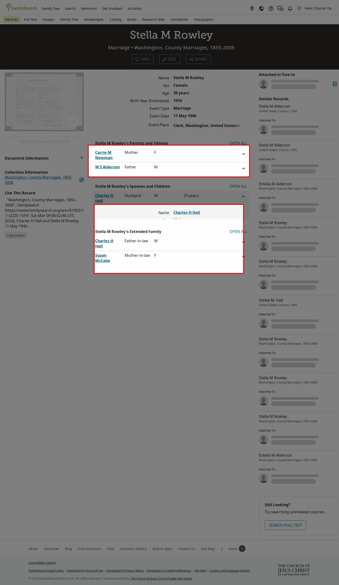

Charles Henry Hall 1920–2001
Peter's grandfather.
Charles Henry Hall was born on 11 Jun 1920 in Vancouver, Clark County, Washington, United States1,2,3,4, the son of Charles Hall and Susan May McCabe2,21,22,23,24,25,26. He married Estella May Alderson on 11 May 1946 in Vancouver, Clark County, Washington, United States4,27,28. He died on 9 Mar 2001 in Santa Ana, California, United States4,15,16,17 and was buried at Fairhaven Memorial Park, Santa Ana, Santa Ana, California, United States4,18.
Family
- Parents
- Charles Hall b. 1890 and Susan May McCabe 1886–1972 documented
- Wife
- Estella May Alderson 1916–2008 · married on 11 May 1946 in Vancouver, Clark County, Washington, United States4,27,28
- Children
- Kathleen Diane Hall b. 1947 documented
- James A. Hall b. 1959 documented
- Charles Hall Jr. documented
- Steve Hall b. 1949 documented
- Dale Hall b. 1952 documented
- David Hall b. 1952 documented
- Susan Hall b. 1960 documented
Life events
| Event | Date | Place and details |
|---|---|---|
| Born | 11 Jun 1920 | Vancouver, Clark County, Washington, United States1,2,3,4 |
| Lived | 7 Apr 1930 | Portland, Multnomah County, Oregon, United States5,6 |
| Work | 14 Apr 1937 | Oregon, United States Civilian Conservation Corps (C.C.C.), Company 2908, Foss, Oregon; Field 4 records 'C.C.C. (Unemployed)' as his employer when the application was signed on 24 January 1939, and Field 13 gives April 14, 1937 as the date he became an employee14 |
| Lived | 24 Jan 1939 | Portland, Multnomah County, Oregon, United States7 |
| Married | 11 May 1946 | with Estella May Alderson Vancouver, Clark County, Washington, United States4,27,28 |
| Lived | 6 Apr 1950 | Portland, Multnomah County, Oregon, United States8,9 |
| Lived | Jun 1950 | Portland, Multnomah County, Oregon, United States According to an online family tree4 |
| Lived | 9 Aug 1970 | Akron, Ohio, United States10,11 |
| Lived | bet 1981 and 1993 | Palo Alto, California, United States12 |
| Buried | Mar 2001 | Fairhaven Memorial Park, Santa Ana, Santa Ana, California, United States4,18 |
| Lived | 9 Mar 2001 | Orange, California, United States4,13 |
| Died | 9 Mar 2001 | Santa Ana, California, United States4,15,16,17 |
| Note | 16 Mar 2001 | Obituary (GenealogyBank index; image 403): Maintenance Manager, of Newport Coast, aged 80. Lists his wife and seven children (2 daughters including Kathleen, 5 sons), all treated as living. Names withheld here.19 |
| Note | Clark Co. WA birth certificate no. 269 (b. 11 Jun 1920) is not online. FamilySearch's DDNT-LYT2 links one image only, 3:1:3Q9M-C9TX-G9YP-C, which is the state index register page (already cropped), not the certificate. The Washington State Digital Archives' birth records for Clark County stop in…20 |
Possible records (not confirmed)
Records that may concern him, but don't settle it: an initial and a surname only, a family recollection, or a reading that needs a second look. Each links to the record.
- Residence 1940 West Spokane Township, Spokane Co., WA, or San Francisco, CA: Two 1940 entries for a 'Charles H Hall', 19, single, born Washington, living in Portland in 1935: K9SV-756 (West Spokane, sheet 9A, line 28) and K9H3-55T (San Francisco, sheet 35B, line 67). Not opened.29 Both fit his age, birthplace and 1935 residence, but neither image has been read.
Photographs


Records











Sources
- Peter's tree, danenberg.sql, 2007–2015, personae 118, birth.
- Hall, Charles Henry, 6-11-20, Clarke.
400 Hall, Charles Henry | Charles Henry | Clarke | Tusan McCab | 6-11-20 | M | W | 269
State birth index: father Charles Henry Hall, mother 'Tusan McCab' [Susan McCabe], male, white, certificate 269.
- Certificate of Live Birth: Charles Henry Hall, State file number 146-1920-001664; filed 1920-07-02; issued 2026-10-26.
CHARLES HENRY HALL / JUNE 11, 1920 12:30 PM / VANCOUVER, CLARKE COUNTY, WASHINGTON / ST. JOSEPH HOSPITAL / MOTHER'S NAME PRIOR TO FIRST MARRIAGE: SUSAN MC CAB / IRELAND / 32 YEARS / FATHER'S NAME: CHARLES HENRY HALL / TEXAS / 29 YEARS
Birth certificate, state file no. 146-1920-001664, filed 2 Jul 1920: Charles Henry Hall, male, born 11 Jun 1920 at 12:30 pm at St. Joseph Hospital, Vancouver. Mother 'Susan Mc Cab', born Ireland, 32. Father 'Charles Henry Hall', born Texas, 29.
- FamilySearch Family Tree: Charles Henry Hall (L51K-5RF).
- 1930 US Census, Portland City Precinct 473, Multnomah County, Oregon, ED 26-472, sheet 2A, lines 47–50.
April 7 | Leonard | 1225 | 115 | 115 | Hall, Susie | Head-H | R | 13.50 | R | No | F | W | 40 | M | 29 | No | Yes | Northern Ireland | Northern Ireland | Northern Ireland | English | 1903 | Na | Yes | Servant | Private family | 95-96 | W | Yes / — Margaret E. | Daughter | F | W | 11 | S | Yes | Yes | Washington | Texas | Northern Ireland / — Charles H. | Son | M | W | 9 | S | Yes | Washington | Texas | Northern Ireland / — Catherine E. | Daughter | F | W | 8 | S | Yes | Washington | Texas | Northern Ireland
1930 US Census (enumerated 7 April 1930, Portland Precinct 473, Multnomah County, Oregon, ED 26-472, sheet 2A, line 49, at 1225 Leonard Street): Charles H. Hall, son, age 9, single, attending school, born Washington (father born Texas, mother born Northern Ireland), in the rented home ($13.50/mo) of his mother Susie Hall (40, servant for private family) with sisters Margaret E. (11) and Catherine E. (8).
- 1930 US Census, Portland City Precinct 473, Multnomah County, Oregon, ED 26-472, sheet 2A, lines 47–50.
1225 | 115 | 115 | Hall, Susie ... Charles H. | Son | M | W | 9 | S | Yes | Washington | Texas | Northern Ireland
1930 US census, Portland Precinct 473, ED 26-472, sheet 2A, line 49 (house no. 1225, Leon[ard]...): Charles H. Hall, son, age 9, born Washington, in the household of his mother Susie Hall (40) with sisters Margaret E. (11) and Catherine E. (8); his Oregon-issued Social Security application (NUMIDENT 6KW1-XKV4) was filed in January 1939.
- SS-5, Charles Henry Hall, signed 24 January 1939, SSA FOIA case 2027-FSS5-00879 (released 2026-11-07).
8045 No COLUMBIA BLVD. | Portland | Oregon
- 1950 US Census, Multnomah County, Oregon, ED 26-76, sheet 12, lines 15–18.
[address omitted] | [address omitted] | 155 | no | no | Hall, Charles H. | Head | W | M | 29 | Mar | Washington | WK | 42 | deisel mechanic | freight company | P / —, Stella M. | Wife | W | F | 33 | Mar | [Seattle crossed out] Washington | H | no | no | no / —, Kathleen D. | Daughter | W | F | 3 | Nev | Oregon / —, Steven C. | Son | W | M | June | Nev | Oregon
1950 US Census (enumerated 6 April 1950, Multnomah County, Oregon, ED 26-76, sheet 12, line 15, at [address omitted]): Charles H. Hall, head, age 29, married, born Washington, working 42 hours/week as a diesel mechanic ('deisel mechanic') for a freight company, with wife Stella M. (33), daughter Kathleen D. (3), and son Steven C. (born June 1949).
- 1950 US Census, Multnomah County, Oregon, ED 26-76, sheet 12, lines 15–18, DigitalFilmNbr 108805908, ImageNbr 13, ImageFolder1950Census 43290879-Oregon-017326, SourcePageNbr 12, SourceLineNbr 15, HouseholdId 155.
Name: Charles H. Hall (Charles H Hall); RelationshipToHead: Head; Gender: Male; Race: W; Age: 29 / 29 years; MaritalStatus: Married; Birth: 1921, Washington; Census: June 1950, Multnomah, Multnomah, Oregon, United States; SourcePageNbr: 12; SourceLineNbr: 15; HouseholdId: 155; Occupation: Deisel Mechanic; OccupationIndustry: Freight Company; MiscWorkerClass: P; MiscHoursWorked: 42
Enumerated (original enumeration date 'Apri 6, 1950' (FamilySearch normalizes it to June 1950), house number 3904, ED 26-76) on sheet 12, line 15, household 155, as Head, Male, race W, age 29, Married, born c. 1921 in Washington; Occupation: Deisel Mechanic, Industry: Freight Company, MiscWorkerClass P, worked 42 hours last week. Household includes wife Steela M. Hall (33), daughter Kathleen D. Hall (3), and son Steven C. Hall (0 days, born June 1949).
- Funeral Notice for Carrie M. Schroeder, The Oregonian, 11 August 1970, p. 33, col. 4.
SCHROEDER — August 9, Carrie M., age 92, in Lebanon formerly of Portland, widow of the late Charles G. Schroeder; mother of Mrs. Lola West of Lebanon, Ore; Mrs. Stella Hall of Akron, Ohio. Funeral services Thursday 11 am Portland Memorial Mausoleum. JOST FUNERAL HOME, Lebanon, in charge.
Inferred from his wife Estella May (Alderson) Hall being recorded as 'Mrs. Stella Hall of Akron, Ohio' in the 11 August 1970 Oregonian funeral notice for her mother Carrie M. Schroeder (died 9 August 1970 in Lebanon, Oregon).
- Obituary of Carrie M. Schroeder, 11 Aug 1970.
Mrs Stella Hall: Residence 09 Aug 1970 @ Akron, Ohio
Inferred to have resided in Akron, Summit County, Ohio with his wife Estella on 9 August 1970, when the 11 August 1970 obituary of her adoptive mother Carrie M. Schroeder (died 9 August 1970) records surviving daughter 'Mrs Stella Hall' as residing in Akron, Ohio.
- Charles H Hall, born Jun 1920, Upland & Palo Alto, CA, Collection 1788, Record 224868144.
Name: Charles H Hall [Charles Hall]; Birth Date: Jun 1920; Residence Date: 1993; Address: 1447 Sunrise Cir S; Residence: Upland, CA; Postal Code: 91784-7316; Second Address: 4094 Villa Vis; Second Residence: Palo Alto, CA; Second Postal Code: 94306-3209; Third Residence Date: 1981; Third Address: 4337 Cesano CT; Third Residence: Palo Alto, CA; Third Postal Code: 94306-4441; Fourth Residence Date: 1993; Fourth Address: 1447 Sunrise Cir S; Fourth Residence: Upland, CA; Fourth Postal Code: 91784-7316
Birth Date: Jun 1920. Addresses: 1447 Sunrise Cir S, Upland, CA 91784-7316 (1993); 4094 Villa Vis, Palo Alto, CA 94306-3209; 4337 Cesano CT, Palo Alto, CA 94306-4441 (1981). All three street addresses are shared with his wife Stella M. Hall (record 1788:407621461).
- Charles H. Hall: Social Security Death Index (SSDI) Death Record.
Name: Charles H. Hall State of Issue: Oregon Date of Birth: Friday June 11, 1920 Date of Death: Friday March 09, 2001 Est. Age at Death: 80 years, 8 months, 26 days Confirmation: Verified Last known residence: City: Newport Coast; Newport Beach County: Orange State: California ZIP Code: 92657
Last known residence on file in the Social Security Death Index at his death on 9 March 2001: Newport Coast / Newport Beach, Orange County, California 92657 (born 11 June 1920, died 9 March 2001, age 80 years, 8 months, 26 days, verified; SSN issued in Oregon).
- SS-5, Charles Henry Hall, signed 24 January 1939, SSA FOIA case 2027-FSS5-00879 (released 2026-11-07).
C.C.C. (Unemployed) | Co. 2908 Foss, Oregon | ... | April 14, 1937
Civilian Conservation Corps (C.C.C.), Company 2908, Foss, Oregon; Field 4 records 'C.C.C. (Unemployed)' as his employer when the application was signed on 24 January 1939, and Field 13 gives April 14, 1937 as the date he became an employee
- Obituary: Charles Henry Hall, 80, The Orange County Register (Santa Ana, California), 16 March 2001.
Charles Henry Hall, 80, of Newport Coast, a trucking maintenance manager, died March 9, 2001, of myasthenia gravis. Services have been held. Arrangements by Fairhaven Memorial Park & Mortuary, Santa Ana. Wife, Stella; daughters, Kathleen Danenberg, Susan Hall; sons, a DNA match, Dale, Charles, James; nine grandchildren.
Died Friday, 9 March 2001, age 80, of myasthenia gravis; resided in Newport Coast, Orange County, California; worked as a trucking maintenance manager; funeral arrangements by Fairhaven Memorial Park & Mortuary, Santa Ana; survived by wife Stella, daughters Kathleen Danenberg and Susan Hall, sons a DNA match, Dale, Charles, and James, and nine grandchildren.
- Charles H. Hall: Social Security Death Index (SSDI) Death Record, Document 11319AAF37649E97.
Charles H. Hall: Social Security Death Index (SSDI) Death Record; Name: Charles H. Hall; State of Issue: Oregon; Date of Birth: Friday June 11, 1920; Date of Death: Friday March 09, 2001; Est. Age at Death: 80 years, 8 months, 26 days; Confirmation: Verified; Last known residence: City: Newport Coast; Newport Beach; County: Orange; State: California; ZIP Code: 92657
Died Friday, 9 March 2001, age 80 years, 8 months, 26 days (born Friday, 11 June 1920; SSN state of issue: Oregon; Confirmation: Verified). Last known residence: Newport Coast / Newport Beach, Orange County, California 92657 (where his son James Patrick Hall also resided at [address omitted] and [address omitted], 92657).
- Charles Henry Hall, 80 — Friday, March 16, 2001, Document 100E823644661B90-100E823644661B90.
Charles Henry Hall, 80, of Newport Coast, a trucking maintenance manager, died March 9, 2001, of myasthenia gravis. Services have been held. Arrangements by Fairhaven Memorial Park & Mortuary, Santa Ana. Wife, Stella; daughters, Kathleen Danenberg, Susan Hall; sons, a DNA match, Dale, Charles, James; nine grandchildren.
Died 9 March 2001, age 80, of myasthenia gravis; residence: Newport Coast; occupation: trucking maintenance manager; arrangements by Fairhaven Memorial Park & Mortuary, Santa Ana. Survived by wife Stella; daughters Kathleen Danenberg and Susan Hall; sons a DNA match, Dale, Charles, and James; and nine grandchildren.
- Find a Grave — Hall, died 2001, Santa Ana, Orange County, California.
No matches found for Hall × Died 2001 × Santa Ana, Orange County, California, USA
NEGATIVE RESULT, recorded so nobody repeats it. Charles Henry Hall is said (FamilySearch tree L51K-5RF) to be buried at Fairhaven Memorial Park, Santa Ana. There is **no Find a Grave memorial** for him: a search for surname Hall, died 2001, Santa Ana returns "No matches found", and so does a search for Charles Hall, born 1920, died 2001, California. Nor is there one for Estella: Estella Hall, died 2008, California returns a single unrelated record (E. Everett Hall, Phoenix, Arizona). So Find a Grave will not yield the family group, and the grave has not been photographed.
- Charles Henry Hall obituary, Santa Ana, 16 Mar 2001.
Obituary (GenealogyBank index; image 403): Maintenance Manager, of Newport Coast, aged 80. Lists his wife and seven children (2 daughters including Kathleen, 5 sons), all treated as living. Names withheld here.
- Hall, Charles Henry, 6-11-20, Clarke.
Clark Co. WA birth certificate no. 269 (b. 11 Jun 1920) is not online. FamilySearch's DDNT-LYT2 links one image only, 3:1:3Q9M-C9TX-G9YP-C, which is the state index register page (already cropped), not the certificate. The Washington State Digital Archives' birth records for Clark County stop in 1907; 1920 is not there. Route: WA DOH Center for Health Statistics, a noncertified (informational) copy, ordered online through VitalChek or by mail from DOH (about $25 plus vendor fees).
- Peter's tree, danenberg.sql, 2007–2015, parentages 15.
- SS-5, Charles Henry Hall, signed 24 January 1939, SSA FOIA case 2027-FSS5-00879 (released 2026-11-07); SSN 542-12-8477.
Charles HENRY HALL | 8045 No COLUMBIA BLVD. | Portland | Oregon | C.C.C. (Unemployed) | Co. 2908 Foss, Oregon | 18 | June 11 1920 | Vancouver Wash | Charles H. Hall | Susan McCabe | male | white | April 14, 1937 | NO | 1-24-39 | Charles H. Hall
father: Charles H. Hall (I0116); mother: Susan McCabe (I0117)
- Certificate of Live Birth: Charles Henry Hall, State file number 146-1920-001664; filed 1920-07-02; issued 2026-10-26 (page 2).
CHARLES HENRY HALL / JUNE 11, 1920 12:30 PM / VANCOUVER, CLARKE COUNTY, WASHINGTON / ST. JOSEPH HOSPITAL / MOTHER'S NAME PRIOR TO FIRST MARRIAGE: SUSAN MC CAB / IRELAND / 32 YEARS / FATHER'S NAME: CHARLES HENRY HALL / TEXAS / 29 YEARS
father: Charles Hall; mother: Susan May McCabe
- 1930 US Census, Portland City Precinct 473, Multnomah County, Oregon, ED 26-472, sheet 2A, lines 47–50.
1225 | 115 | 115 | Hall, Susie | Head-H … Margaret E. | Daughter | F | W | 11 | S | Yes | Yes | Washington | Texas | Northern Ireland … Charles H. | Son | M | W | 9 | S | Yes | Washington | Texas | Northern Ireland
mother: Susan May McCabe
- Marriage statistics, Charles H Hall and Stella M Rowley, Clark Co., 11 May 1946.
Full Name: Charles H Hall | Residence: Portland, Ore | Age at last Birthday: 25 | Birthplace: Vanc. Wash. | Occupation: Shipping Clerk | Name of Father: Charles H. Hall Sr. | Birthplace of Father: Texas | Maiden Name of Mother: Susan McCabe | Birthplace of Mother: Ireland
father: Charles Hall; mother: Susan May McCabe
- Funeral Notice: Hall — Susan, Oregon Journal (Portland, Oregon), 8 February 1972, p. 25; and The Oregonian (Portland, Oregon), 9 February 1972, p. 27 & 10 February 1972, p. 73.
HALL — Susan, 4734 Deoau.v; mother of Catherine E. Hail# Charles H. Hall and Margaret H. Henry; 9 grandchildren; 3 great grandchildren.
mother: Susan May McCabe
- S-fs-Q2ZV-1VF4.
To Charles H. Hall (25). Bride 30. Bride's parents: W. S. Alderson and Carrie M. Newman. Groom's parents: Charles H. Hall and Susan McCabe.
- Marriage statistics, Charles H Hall and Stella M Rowley, Clark Co., 11 May 1946.
Charles H Hall | Portland, Ore | 25 | White | Single | None | Wash. | Shipping Clerk | Charles H. Hall Sr. | Texas | Susan McCabe | Ireland
To Stella M. Rowley. He was 25, single, a shipping clerk, of Portland, born Wash. Father Charles H. Hall Sr., born Texas; mother Susan McCabe, born Ireland.
- United States, Census, 1940, NARA T627, via FamilySearch.